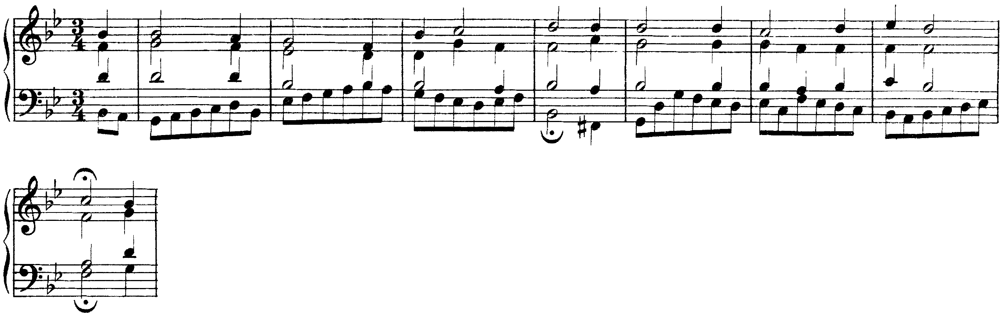

Tutta l’ora per le interrogazioni.
Lezione di due ore. Seconda ora: Le cadenze a quattro parti: autentica e sospesa. I compiti per casa sono alla fine.
Tutta l’ora: quattro studenti alla lavagna, uno dopo l’altro. La classe segue le interrogazioni.
Ogni interrogazione: un esercizio alla lavagna e qualche domanda su argomenti già fatti.
Il dettato di verifica previsto oggi si fa venerdì 20/11, in apertura della lezione 5 dell’unità 4.
Quattro cadenze a quattro parti: due chiudono (autentica e plagale), due lasciano la frase aperta (sospesa e d’inganno). La nota del soprano gradua la chiusura.
La cadenza assume così il ruolo dei segni d’interpunzione del linguaggio scritto.
Carlo Marenco, Manuale d’armonia, p. 52
C8Successioni armoniche e cadenze, pp. 282–291
Sezione C, unità 8: lezione 25 «La cadenza autentica e la cadenza sospesa» (pp. 282–285), lezione 26 «Metro e ritmo nelle cadenze», lezione 28 «Altre cadenze» (la plagale, l’evitata e la d’inganno, pp. 290–291). Per le cadenze con la sottodominante nella melodia: B8, lezione 30 (pp. 184–185).
La cadenza è il collegamento di accordi posto alla fine di una semifrase, di una frase o di un periodo, che ne segna l’articolazione come la punteggiatura segna quella di un testo: «stati di sospensione o conclusione, di slancio o riposo, domanda o risposta». Marenco distingue cadenze conclusive e cadenze sospensive (o semicadenze) (Manuale d’armonia, p. 52). Il libro la definisce «un particolare profilo melodico, spesso discendente, accompagnato da una successione di accordi con effetto conclusivo» (p. 282).
| Cadenza | Accordi | Effetto |
|---|---|---|
| autentica (perfetta o imperfetta) | V–I | conclusiva |
| plagale | IV–I | conclusiva, più debole |
| sospesa | I–V, IV–V | sospensiva |
| d’inganno | V–VI | elusiva |
Chiamare cadenza qualunque V–I. Dentro una frase lo stesso collegamento non chiude niente: diventa cadenza quando cade alla fine di un’unità della frase, con l’accordo d’arrivo su un tempo forte e, spesso, un valore più lungo.
La cadenza autentica è il collegamento V–I: per Marenco «il più semplice e al contempo il più energico segnale di chiusura di una struttura musicale grande o piccola che sia» (p. 52, dove è chiamata cadenza perfetta). È perfetta quando i due accordi sono in stato fondamentale e il soprano arriva sulla tonica (posizione melodica di ottava); è imperfetta quando il soprano arriva sulla terza o sulla quinta dell’accordo, oppure quando uno dei due accordi è rivoltato (libro, pp. 283–284).
«La nota posta al soprano definisce la posizione melodica dell’accordo»: di ottava con la fondamentale al soprano («senso di chiusura dell’accordo in se stesso»), di terza con la terza, di quinta con la quinta (Marenco, p. 10). Nei bassi numerati si indica con i numeri 8, 3, 5 sopra la prima nota (Zaffiri, Appunti di armonia complementare, p. 9).
Le due frasi del periodo hanno lo stesso basso e la stessa armonia fino alla cadenza. Alla b. 4 il soprano arriva sul si, terza dell’accordo di sol: la cadenza è autentica ma imperfetta, e la frase chiede una continuazione. Alla b. 8 il soprano sale dalla sensibile fa♯ alla tonica sol: cadenza perfetta, e il periodo si chiude.
Chiudere un brano in posizione di terza o di quinta. La cadenza resta autentica, ma non conclude: alla fine di un basso si chiude in posizione di ottava.
La sensibile del soprano che non sale. Nella cadenza perfetta con il soprano sensibile–tonica, il fa♯ deve salire al sol; se scende, la cadenza perde la sua spinta e il soprano chiude sulla quinta.
La cadenza sospesa si ferma sull’accordo di dominante, raggiunto dal I o dal IV: «contrariamente alla cadenza perfetta, quella sospesa è il mezzo più rapido ed efficace per generare tensione, sospensione» (Marenco, p. 53). Chiude di norma la prima frase di un periodo, e crea l’attesa della seconda (libro, pp. 284–285).
Nel corale BWV 326, brano guida di questa unità, le prime due frasi chiudono in modo diverso. La prima (bb. 1–4) arriva sul I con il soprano sulla terza, re: cadenza autentica imperfetta. La seconda passa per sol minore (alla b. 4 il basso scende al fa♯, sensibile di quella tonalità), torna al si♭ maggiore e alla b. 8 si ferma sul V, preceduto dal I in primo rivolto: cadenza sospesa. Il basso procede in crome dall’inizio alla fine; gli accordi si leggono sui movimenti.

Due ascolti delle bb. 1–8. Al primo si alza la mano alle due chiuse (b. 4 e b. 8). Al secondo si canta a mezza voce la nota del soprano su cui ciascuna chiude, re e do, e si dice quale delle due lascia la frase aperta.
Riconoscere la sospesa dal soprano invece che dall’accordo. Anche una cadenza autentica imperfetta lascia la frase aperta; la sospesa si riconosce dal basso, che si ferma sul V grado.
Autentica V–I: perfetta con soprano sulla tonica e accordi in stato fondamentale, imperfetta altrimenti. Plagale IV–I: più debole, spesso coda dopo l’autentica.
Sospesa: la frase si ferma sul V. D’inganno V–VI: la sensibile sale, si raddoppia la terza del VI, e la cadenza vera arriva dopo.
Lezione 2, venerdì: il primo rivolto, che rende imperfetta anche una cadenza V–I e fa camminare il basso. La lezione si chiude con il solfeggio parlato, cantato e ritmico.
Compiti per la prossima volta
Realizza il basso a quattro parti.
Sul quaderno, a matita. La foto del lavoro finito va su Classroom. Nel Workbook: apri l’esercizio C2-U4-L1-21 ↗
Compiti per la prossima volta
n. 180 e n. 181 parlato · n. 182 e n. 183 cantato · n. 184 e n. 185 ritmico
Ogni pezzo a tempo, senza fermarti: il parlato a nomi, il cantato prendendo il primo suono dalla tastiera, il ritmico battendo la pulsazione.
Scrivi il ritmo sul quaderno: otto battute in 4/4. Ascolta tutto due volte, poi ogni coppia di battute due volte, poi il collegamento 1–4, 3–6 e 5–8, e tutto per controllare.
Il dettato · otto battute
Le sezioni (riferimento, tutto, le coppie, il collegamento) si ascoltano una per una e si ripetono quanto serve; le fasi fanno la procedura della classe, con gli annunci e le pause, da qualunque punto.
Sul quaderno scrivi in testa la sigla C2-D-U04-L1. Si corregge all’inizio della prossima lezione.
Compiti per la prossima volta
Scrivi un contrappunto di prima specie (nota contro nota) sotto il canto fermo, in modo ionico (finale do): dieci battute. Comincia su una consonanza perfetta, alla cadenza la sensibile sale alla finale, niente quinte e ottave consecutive.
Sul quaderno, con la sigla C2-CP-U04-L1 in testa; la foto va su Classroom.
Scritto: Un basso senza numeri di otto battute (Workbook, esercizio C2-U4-L1-21), sul quaderno; la foto va su Classroom. Solfeggio dal quaderno di lettura: parlato n. 180, 181; cantato n. 182, 183; ritmico n. 184, 185 (a tempo, senza fermarsi). Dettato C2-D-U04-L1 dalla pagina della lezione (sezioni da ascoltare, o le fasi della procedura guidata), sul quaderno con la sigla. Contrappunto di prima specie sul canto fermo (C2-CP-U04-L1).
In classe
A nomi, a tempo, con la mano che batte. Chi si ferma riparte dalla battuta dopo.
Apri il n. 176 nel quaderno di lettura ↗ chiave di contralto · 4/4
In classe
Si prende il tono dalla tastiera, si canta insieme; poi a gruppi.
Apri il n. 177 nel quaderno di lettura ↗ chiave di violino · 3/4 · sol maggiore
Apri il n. 178 nel quaderno di lettura ↗ chiave di violino · 3/4 · sol maggiore
In classe
Tutti insieme, battendo la pulsazione. Poi a file, due battute a testa.
In classe
Sotto ogni nota scrivi il grado; nomina le cadenze delle bb. 3–4 e 7–8; poi realizza il basso a quattro parti, parti late, cominciando dal la al soprano e chiudendo in posizione di ottava.
Dieci minuti sul quaderno, poi si confronta alla lavagna.